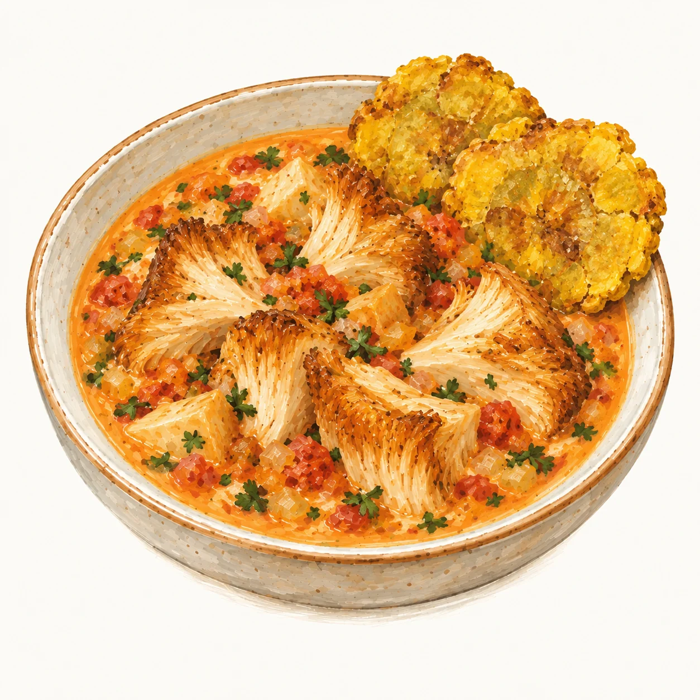
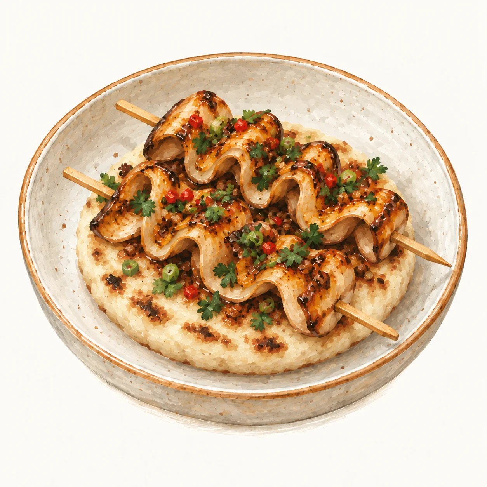
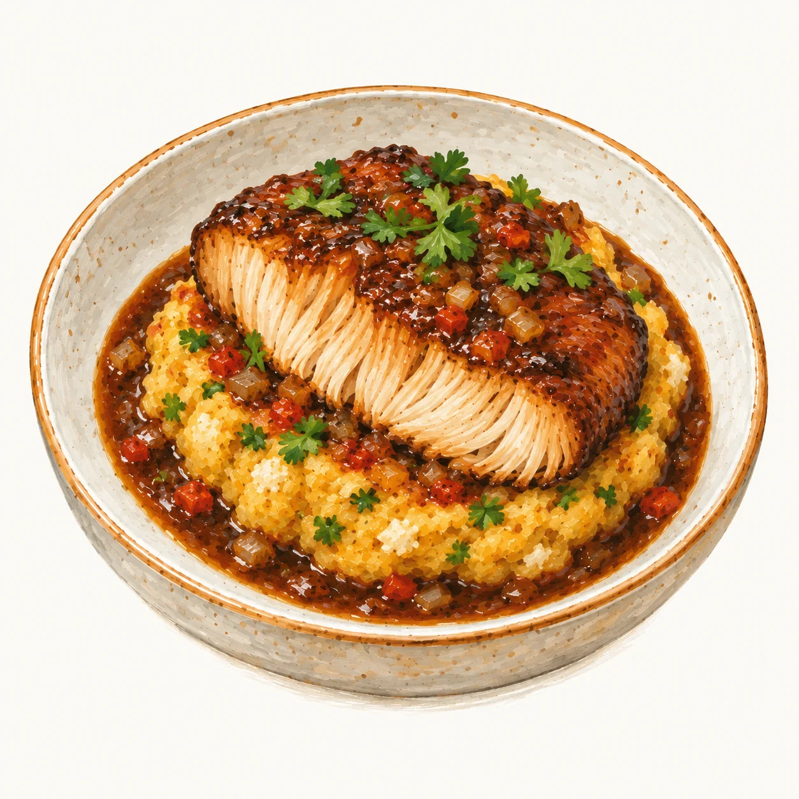
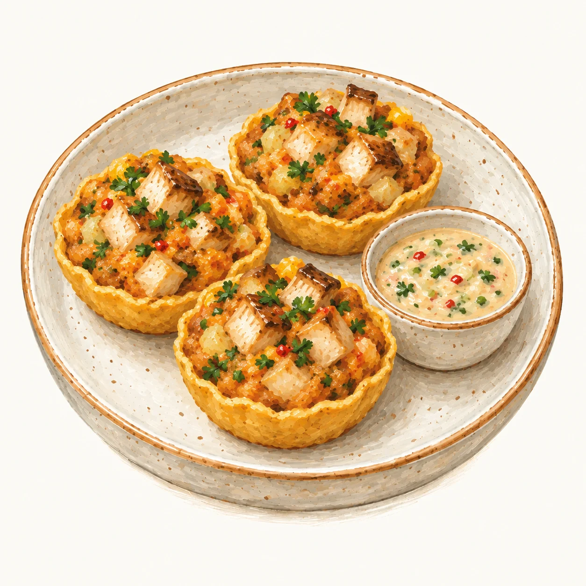

Del micelio
a la mesa.
Somos un proyecto de cultivo de hongos en Tenjo, construido por etapas. Conoce las especies, descubre cómo prepararlas y sigue el desarrollo de nuestro cultivo.
La trazabilidad permite relacionar un lote con información de su recorrido. Los registros ayudan a conocer su procedencia y las etapas documentadas. Qué es la trazabilidad · FAO ↗
Shiitake Lentinula edodes

Arepa de shiitake, maíz dorado y aguacate
Maíz en dos texturas y shiitake salteado.
Melena de león Hericium erinaceus

Encocado con chillangua y patacones
Gajos dorados de melena, leche de coco y hogao.
Eryngii Pleurotus eryngii

Chuzos con panela y limón mandarino
Cintas de eryngii glaseadas, sobre arepa blanca.
Shiitake Lentinula edodes

Sopa de shiitake, coco y jengibre
Leche de coco, jengibre, limón y cilantro.
Melena de león Hericium erinaceus

Melena prensada con salsa oscura
Panela, plátano maduro y queso costeño.
Eryngii Pleurotus eryngii

Tartaletas de maíz con pipián
Dados de eryngii, papa y maní en canastilla de maíz.
3 especies visibles.
Ninguna especie coincide con esa preparación.
Melena de león
Hericium erinaceus
Textura suave. En piezas o desmenuzada.
Ilustraciones de especie. Perfiles culinarios de referencia.[1]
Disponibilidad por confirmar.
Consultar shiitake